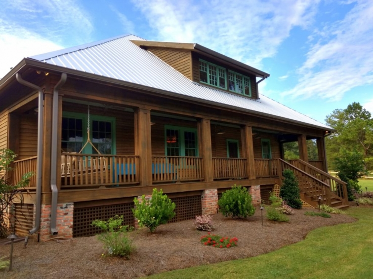
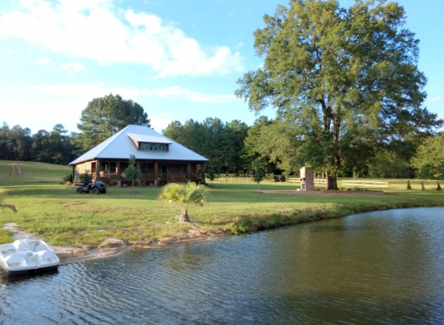
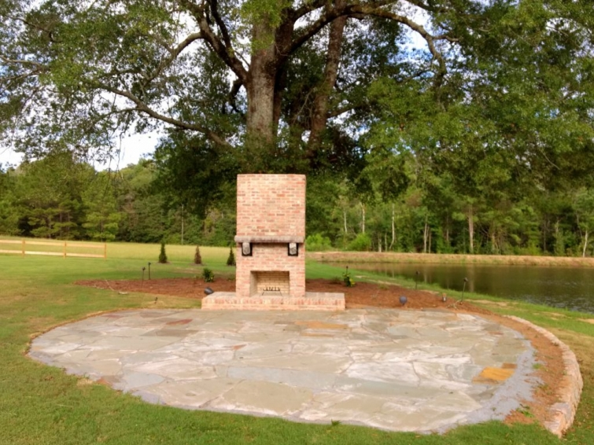

.png)
.PNG)
.PNG)
.PNG)
.PNG)
.PNG)
.JPG)
.JPG)
.PNG)
.PNG)



Happy day of love to you! What is more appropriate to talk about on Valentine’s Day than a wedding? 🙂 So today we are going to look at three wedding venues that our daughter and her fiance considered for the site of their upcoming wedding.

Their special day is set for a Saturday morning in the spring of next year, and they want their venue to have a rustic, casual vibe. Because so many of these places fill up their calendars with Saturday weddings, it is a good idea to book them about a year in advance to ensure that you get the date you want.

The first one I am sharing here is Kingland Farm near Hawkinsville, Georgia. The owners moved the old house from Kathleen, Georgia, placed it on their farmland overlooking a small lake, renovated it with the help of a construction company, and decorated the interior with the help of Cossart Design of Perry, Georgia.

I think they all did a wonderful job of bringing beauty to the old house, and no detail was overlooked. There is a lake, an outdoor fireplace, and a porch with a great porch swing for enjoying the areas around the house.

On the interior, they removed sheetrock to reveal the old plank walls (built looong before shiplap was a trend. 🙂 )

Don’t you think the artwork fits beautifully in these spaces? 🙂


Here is the kitchen in which the caterers would set up.

There are several table areas in the house.

And upstairs there is this fabulous space! You can’t tell from my photo, but those windows have a view of the lake.

And isn’t this lamp just wonderful? I know I could find a place here for one like that. 🙂

I know Kingsland Farm is an event venue, but I would love to live there! 🙂

Now let’s take a look at another beautiful one. This is The Estate at Stone Creek located in Macon, Georgia.

Their facility is a beautifully restored 100 year old lodge…also located on a lake.


This room just took my breath away when we walked inside. Those beams and that gorgeous wood floor!


The main space is dark and cozy, but the other areas of the building are light and bright. This is part of the kitchen area. Loved all the beadboard walls!

On one side of the building is the groom’s area.

Here is the bathroom for that side.

And my favorite space was this one on the other side….the bride’s side.
(Paint color is Sherwin Williams Silvermist.)

Isn’t it pretty? 🙂
And now one final one.
For this venue, you must drive down a few dirt roads….

and past cotton fields….
(It was the fall when we visited.)

Then you arrive at The Peach Barn at Timbermill Acres in Tifton, Georgia.

This one too has a rustic, casual feeling with its wood paneled walls and ceiling in the reception area.


Again there is a large kitchen for the caterers to use.

And a bar area is located off to the side of the kitchen space.

Upstairs there is a room for the bride and her bridesmaids to spend the night and get ready.

(We visited on the day after a wedding was held there which is why the linens were in a pile.)

On the other side, across the balcony area, is the groom’s space.

There is even a porch located on an upper balcony area.

Below that porch is a screened porch right off the big reception area.

Here is a view of the barn from the back side.

And if you turn around, this is your view. 🙂

On the side of the building is this seating area.

And around front is this swing set.

If you walk down a path that is off to the side of the building you come to their Heart Pine Chapel.

With folding seats set up, it makes a lovely spot for a ceremony.

And that brings us to the end of the tour. I am not going to tell you which one our daughter and her fiance chose, since they kind of want it to be a surprise to their guests (and a few of them read the blog. 🙂 ) But you are welcome to leave a comment to say which one you like best.
And I know a number of you are saying, Where is Kelly’s Valentine’s Day decorating and gifts? She always has that on the blog. Right? Well I will explain the reason for that in my next post. Until then, I hope you are having a love-ly day! 🙂
Happy Valentine’s Day!


.PNG)
Hi Kelly.
I’ve read your wonderful blog from afar (first in Saudi Arabia and now Dubai where I work). Throughout, it has been a beacon in the desert which always brightened a day. Whilst sad to know you’ll be going, I’m glad to have read and enjoyed your blog and wish you and your husband well in this next thrilling adventure.
Colin
Glad I don’t have to make that decision…they are all lovely and each have their own qualities. I guess the one that stood out is the Heart Pine Chapel. I like that they have that in addition to the rest of the property.
They all have something to offer. I hope they will be happy no matter what, and I can’t wait to see photos next year!
Those venues are all gorgeous! The Peach Barn is near where we live, and the chapel is beautiful. But I must say that I’m sort of partial to the Estate at Stone Creek–those beams and windows–oh my! And now I want to paint something Silvermist too! LOL No matter where they get married, it will be a lovely and special event. How could it not be, with your planning and styling abilities?! So happy and excited for all of you!
The Estate at Stone Creek had me at those beams/windows. All are lovely places but this was my favorite. How fun for all of you to be planning this “special” day. Just don’t you or your daughter get stressed out about it because it all works out.
Fun, fun, fun!!! I like them all, but if I had to pick, I’d go with Estate at Stone Creek. No matter where it is, I know it will be beautiful!
Love all of the choices and can’t wait to see which she chooses! Such a fun and happy time!
Wow! All amazing choices, no way to go wrong. The Heart Pine Chapel at The Peach Barn in Timbermill Acres is gorgeous.(Georgia Pines and Peach Barns? Perfect Southern Wedding!)
DEFINATLY !!! PEARCH. BARN. ,!!!!Be still my heart !!!
Oh my! Perfect post on this lovely Valentines Day! All of the venues are wonderful and I know with the personal touches you and she and your family will bring to the place it will be perfect!! Oh, a whole year to dream and plan!! How much fun will that be?!? 💕🙏💕
They are all pretty but I like the Estate at Stone Creek the best! Whichever they choose will be wonderful! What an exciting time for you all!
Your daughter and her fiancé can’t go wrong with any one that they choose. They all are beautiful and fit the bill for rustic and casual. All three are awesome. Enjoy this year with all the planning and time spent with your daughter. It will be over before you know it. You and your daughter will have so much fun with decorating and setting up. The guests will leave knowing they were somewhere very special with some very special people. As for my pick, I can not pick just one. Each one has something very special about them.
They are all very pretty. Enjoy the process. It will be over before you know it just like how fast they grew up.